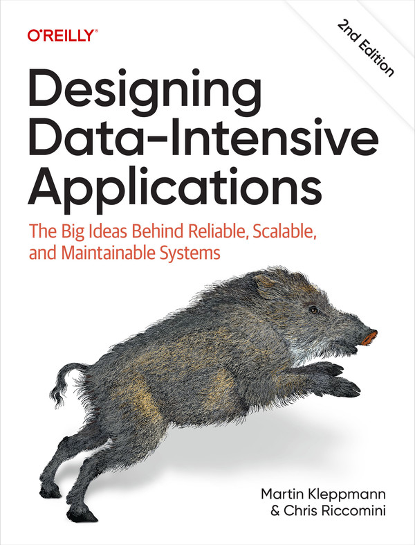

英文第二版封面 · O’Reilly
BOOK 004 / 数据系统的机制与取舍
Designing
Data-Intensive Applications
Second Edition · The Big Ideas Behind Reliable, Scalable, and Maintainable Systems
一次数据库写入怎样成为可靠的记录？数据分到多台机器以后，读者会看到什么，故障又留下什么？本书沿数据模型、存储、复制、事务和共识逐层解释这些问题，再把批处理与流处理连接成应用的数据流，最后讨论系统对人的影响。
适合有基本编程与 Web 应用经验、了解关系数据库和 SQL，希望补充分布式系统基础的读者。了解 TCP、HTTP 有助于阅读。笔记会用具体操作、数据与失败情境解释机制，保留原书的推理、权衡和适用边界。
第二版新增或重写云原生与对象存储、向量索引、DataFrames、GraphQL、本地优先与同步引擎、持久化执行、形式化方法和随机化测试；一致性与共识、现代批处理也有较大调整。本站按第二版十四章组织。
依据用户提供的 673 页英文原书 PDF。中文章名与术语为本站译法，不对应特定中文出版译本。版本与前言核查：2026-11-07。作者维护的参考文献。
阅读目录
14 个主体章节 · 全部已收录以下三组是本站学习分组，保留原书章序，不是原书正式分部。按问题复习可进入全书导航：选型与性能、一致性与故障、演化与数据流、端到端正确性、数据责任；另有术语、案例、来源与纠错索引。
01—05 · 架构选择与数据基础
先理解需求、数据表示和存储，再讨论变化怎样跨越程序版本。
01数据系统架构的权衡取舍Trade-Offs in Data Systems Architecture运营与分析、权威记录与派生数据、云与自建 · 13 节 · 2 图 02定义非功能性需求Defining Nonfunctional Requirements时间线案例、性能、可靠性、可扩展性与可维护性 · 12 节 · 3 图 03数据模型与查询语言Data Models and Query Languages关系、文档、图、事件溯源与 DataFrames · 16 节 · 3 图 04存储与检索Storage and RetrievalLSM、B-tree、列式分析、全文与向量索引 · 14 节 · 5 图 05编码与演化Encoding and Evolution兼容方向、数据格式、RPC 与持久化工作流 · 15 节 · 3 图06—10 · 分布式数据与正确性
复制与分片改变数据位置，事务与共识规定并发和故障下的承诺。
06复制Replication单主、多主、无主复制，冲突与因果 · 21 节 · 5 图 07分片Sharding键分布、热点、再平衡、路由与二级索引 · 13 节 · 4 图 08事务Transactions隔离异常、可串行化、两阶段提交与处理边界 · 24 节 · 7 图 09分布式系统的困难The Trouble with Distributed Systems网络、时钟、进程暂停、系统模型与验证 · 21 节 · 6 图 10一致性与共识Consistency and Consensus线性一致性、有序 ID、共识与协调服务 · 22 节 · 6 图11—14 · 数据流与系统责任
从批流处理走向系统组合，继续追问端到端正确性与数据使用的后果。
11批处理Batch Processing有界输入、数据流引擎、shuffle、连接与重跑 · 18 节 · 4 图 12流处理Stream Processing消息与日志、CDC、窗口、连接与故障恢复 · 23 节 · 7 图 13流系统的哲学A Philosophy of Streaming Systems组合数据系统、派生视图与端到端正确性 · 26 节 · 6 图 14做正确的事Doing the Right Thing预测偏见、隐私、权力关系与数据责任 · 12 节 · 3 图先辨认：哪份数据负责记录事实？
第 1 章把权威记录系统与派生数据区分开来。前者保存某项数据的权威版本，后者为某种读取用途，从已有数据生成另一种表示。例如，同一批业务记录可以供给搜索索引和分析聚合；它们属于派生数据，不因为采用不同数据库就各自成为事实来源。
从图中左侧沿实线读到权威记录，再沿虚线读到派生视图：两种箭头分别表示业务写入和派生更新。派生更新可能滞后，因此“原记录已保存”和“所有查询视图已更新”是两个状态。图示是笔记的原创概念说明，未指定具体同步协议。
“可重建”也有前提：所需源数据仍被保留，转换逻辑、必要版本与其他输入条件能够恢复。这个条件提醒我们，派生不等于可以无条件删除；第 11—13 章会进一步讨论重处理、数据传播与正确性。